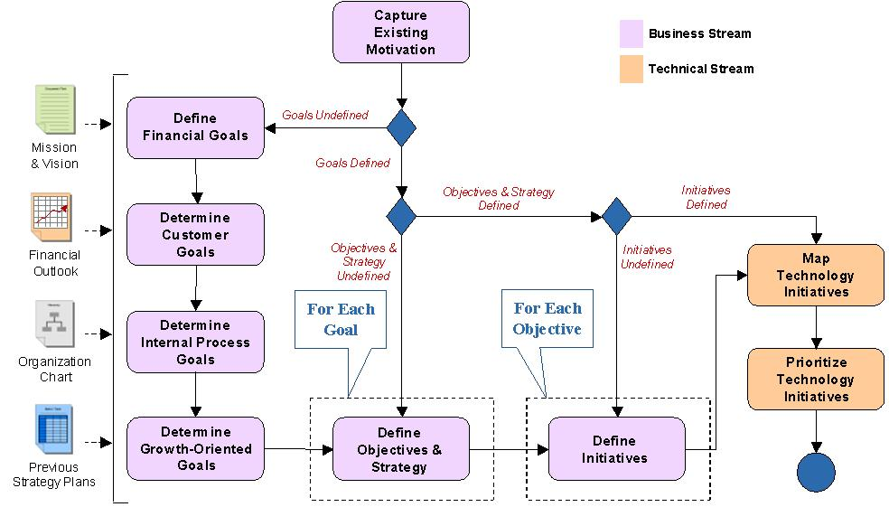
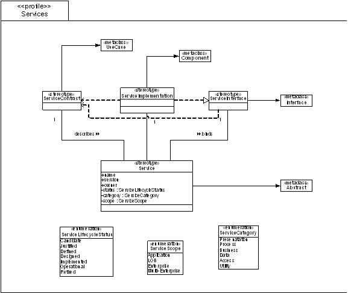
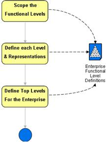
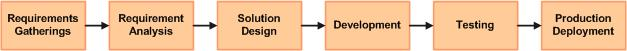
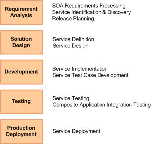
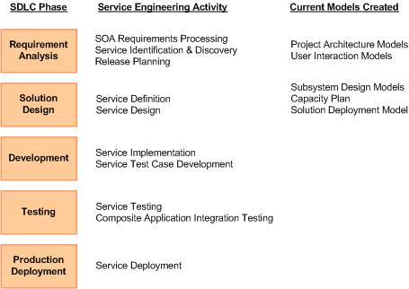
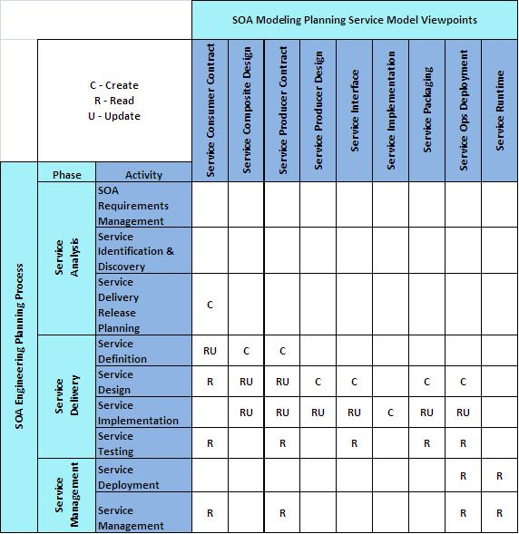

OUM |
SOA Modeling Planning Supplemental Guide |
||
Method Navigation |
Current Page Navigation |
||
|
|
||||||||
This document contains OUM supplemental task guidance for the execution of a service based on the SOA Modeling Planning View.
The task guidelines in this document should be used to supplement the guidelines that appear in the OUM Task Overviews.
This document mentions three roles: engagement lead, business stream and technical stream. These are roles, not actual resources and as such a given person may carry out more than one role and a role may be staffed by more than one person. The skills and tasks required by each role are:
Engagement Lead: This role is responsible for overall management of onsite activities, including overall schedule, quality of work products, and executive presentations. As an engagement manager, he/she must be able to lead other practitioners and manage tasks, work products and scheduling as related to this service. The engagement lead is staffed at the beginning of the engagement (Mobilization), and plays the key role in scoping the service offering to meet enterprise needs. Throughout delivery, the engagement lead will lead kickoff meetings and enterprise presentations. This person will be responsible for finalizing and presenting work products and will act as team lead when multiple consultants are involved in the delivery. The engagement lead will remain on the engagement until all Post-Delivery activities are completed.
Business Stream: this role is responsible for performing all non-management tasks pertaining to the formulation of a business motivation model and development of a stakeholder library. It may be staffed by a senior practitioner with sufficient business acumen and facilitation skills. The practitioner must be able to facilitate workshops, interview business and IT executives, communicate effectively, gather information and present it in a clear and logical manner.
Technical Stream: this role is responsible for performing all non-management tasks related to architecture and technology. It may be staffed by an architect or technical practitioner with equivalent skills. The practitioner must be well versed in modeling techniques (such as UML, BPMN, ERD) and principles and best practices of SOA. He/she must be able to facilitate workshops, communicate effectively, gather information and present it in a clear and logical manner.
Mobilization begins with the qualification of the effort to scope the engagement to best meet the needs of the organization. An engagement may be based solely on this view, but may also be increased to cover multiple OUM views or tasks to produce a more fully featured planning and delivery engagement; in particular it may be combined with the SOA Engineering Planning View. It may also be scoped back to focus on only a subset of the five areas covered in this view, streams, tasks, and work products, while omitting others.
This area involves the following roles:
Role |
Responsibility |
|---|---|
Implementing Organization |
|
| Enterprise Architect | Assess and understand the maturity of the organization and suggest a scope for the engagement. Be familiar with the material from Oracle Reference Architecture (ORA) and all OUM techniques available for this engagement. |
| Enterprise Repository Manager | Support the enterprise architect on asset management topics relevant for the organization. Must be familiar with OUM and have project experience in service engineering and modeling. |
| Methodologist | Support the enterprise architect on assessment and identify the topics relevant for the organization. Must be familiar with OUM and have project experience in service engineering. |
Customer (User) |
|
| Customer Project Sponsor | Agree on the scope of the engagement. |
| Customer Project Manager | Identify the stakeholders needed in the engagement and ensure their availability and commitment |
| Customer Executive | Provide insight into the business and IT strategy of the organization. Responsible for strategic decisions and overall IT portfolio planning. |
| Enterprise Architect | Provide insight into the overall usage of modeling techniques at the organization. Responsible for enterprise SOA or enterprise architecture in general at the organization. |
| Enterprise Repository Manager | Provide insight into the usage and meta model of the enterprise repository of the organization. Responsible for the enterprise repository of the organization. |
| Methodologist | Provide insight into the approach to SOA and which modeling techniques are used at the different stages in the SDLC of the organization. Responsible for the SDLC of the organization. |
The engagement lead is primarily responsible for determining the scope of the engagement. The areas and work products should be aligned with organization objectives, and the activities should support successful completion of the work products. When determining the scope of the engagement, you need to be clear how much should be included to best meet the needs of the organization. An engagement may be solely based on this view, but may also be increased to cover multiple views to produce a more full-featured planning and delivery engagement. In particular it may be combined with the SOA Engineering Planning View.
You may also decide to reduce scope, to only focus on certain aspects covered in this view.
A number of meetings, phone calls, or emails can be used to finalize the scope with the organization. Organization objectives may originate from sources such as:
Once the engagement has been scoped, the engagement lead should determine a level of effort (LOE) for each delivery area and stream, which will combine into an estimate for the engagement as a whole. A number of factors can affect the estimate, such as:
When determining the strategy for the engagement, you should consider the organization's existing situation, and review the following techniques as input
The development of the strategy and a plan for the duration of the engagement can vary, depending on the size and complexity of the project. The strategy and plan should be concluded with proposal document or presentation to the organization where the go/no-go decision is received.
You can use the following questions as an assistance to scope the engagement, if not already answered through the previous steps:
Motivational Modeling is used to capture business motivation and map it to IT and technology initiatives. This provides the ability to trace IT activities back to business goals and justify efforts and expenditures related to initiatives such as:
Business motivation can be used as an input to project prioritization, business process justification, and service justification. It may also serve as an input to identifying Key Performance Indicators (KPIs), which feed into the instrumentation and monitoring strategy. For these reasons Motivational Modeling should be undertaken prior to an engagement based on the SOA Engineering Planning View.
The work product from Motivational Modeling is a Business Motivational Model (BMM) that is based on the process described in BA.010, Identify Business Strategy. The work product will most often be in the form of a presentation to management stakeholders.
This process can consume and extend pre-existing enterprise motivational models, or documented business goals and/or objectives, or it may be delivered without the benefit of such materials.
This area involves the following roles:
Role |
Responsibility |
|---|---|
Implementing Organization |
|
| Enterprise Architect | Create a presentation for the kickoff and lead the meeting. Execute the business Motivational Modeling process with the organization. Create the business Motivational Model and the Motivational Mapping and traceability documents. Organize the document review and finalize the document. Create and present the findings presentation at the wrap-up meeting. |
| Enterprise Repository Manager | Attend the kickoff meeting and the wrap-up meeting. Represent the interest of asset management. |
| Methodologist | Prepare and present an overview of the consulting organization's Enterprise SOA approach and Service Modeling Framework for the kickoff meeting. Provide support on the business Motivational Modeling process. Review the business Motivational Model and the Motivational Mapping and traceability documents as well as the findings presentation. Attend the wrap-up meeting. |
Customer (User) |
|
| Customer Project Sponsor | Introduce the kickoff workshop, sharing the objectives and importance of the project. Attend the Motivational Modeling wrap-up meeting. |
| Customer Project Manager | Attend kickoff meeting and control stakeholder participation. |
| Customer Executive | Prepare and present an overview on the organization's business and IT strategy for the kickoff meeting. Support the business Motivational Modeling process. Review and sign the business Motivational Model and the Motivational Mapping and traceability documents. Attend the wrap-up meeting. |
| Enterprise Architect | Prepare and present an overview on the modeling techniques used at the organization for the kickoff meeting. Support the business Motivational Modeling process. Review and sign the business Motivational Model and the Motivational Mapping and traceability documents. Attend the wrap-up meeting. |
| Enterprise Repository Manager | Prepare and present an overview of the enterprise repository and the meta model relevant for modeling for the kickoff meeting. Attend the wrap-up meeting. Represent the interests of asset management. |
| Methodologist | Attend the kickoff meeting and the wrap-up meeting. Represent the interests of SDLC methodology. |
| Business Analyst | Attend the kickoff meeting and the Service Architecture workshop. Represent the interests of business analysis. |
The following activities are available to assist in this area:
Technique Guidance |
Technique Note |
|---|---|
| Motivational Modeling | This technique provides assistance on the business Motivational Modeling (BMM) and describes the activities needed to create a BMM. |
It is recommended to have a kickoff workshop at the beginning of the engagement, as well as when you start the Domain Analysis.
A good way to initiate the on-site activities related to this view is to hold a kickoff workshop. The intent is to bring together all people that will be expected to contribute during the engagement to discuss what will take place. The workshop should begin with the enterprise executive sponsor presenting why the organization is undertaking this effort and the importance it has. This serves to inform the enterprise stakeholders that there is senior management backing, and that participation of stakeholders is required.
The workshop also provides an opportunity to level-set everyone on what the engagement entails, what it is meant to provide for the organization, what participation is needed, and what to expect as the result of the service. The engagement lead should present this part of the workshop. In addition, the kickoff meeting is a good opportunity to outline who the enterprise participants are, why they have been asked to be involved, and a rough timeline of their activities. Doing so provides the forum for discussion about who should be participating and allows people the chance to volunteer or decline involvement up front. It is also a good forum to discuss the benefits that the engagement will have for the organization and answer questions that people might have about modeling or SOA in general.
The Kickoff Workshop can either conclude after presenting the material mentioned above, or it may continue with activities related to motivational modeling (see next step below). The decision of whether or not to continue should be based on availability of participants. If the representatives needed for these steps are able to continue, then the meeting may proceed with that segment of the audience remaining and all others dismissed.
INPUT: Kickoff presentation, existing enterprise motivation materials
OUTPUT: Possible updates to engagement participants and schedule
RESOURCES: The primary resource is the engagement lead. Other resources may assist with the presentation and workshop.
During a Domain Analysis Workshop you should present key concepts of OUM and in particular those related to Domain Analysis. Concepts in this context include a definition of domains, stakeholders, concerns, models, viewpoints, views, and how they relate to each other.
The engagement lead should deliver this overview and be prepared to answer questions the organization might have about the concepts.
The workshop presentation can also include an overview of how the engagement is proceeding.
INPUT: Modeling Concepts presentation
RESOURCES: The primary resource is the engagement lead. Other resources may assist with the presentation and workshop.
To perform the Motivational Modeling process, use the motivational modeling part of this task, Identity Business Strategy (BA.010). In addition, there is a technique guidance for Motivational Modeling. The approach described in this techniques guidance should be followed in its entirety, culminating with the development of a Strategy Map, Motivational Model, and Technical Initiative Mapping.
It is quite common for businesses to engage in some form of business motivational modeling in order to define goals for their organization. These goals can pertain to the entire company or a specific segment such as a line of business (LOB). They may be captured in a number of ways either through formal processes, such as Balanced Scorecards, TQM, etc., or through informal ad hoc means. Since the goal is to leverage existing materials whenever possible, any existing documentation pertaining to business goals, objectives, and initiatives should be collected and reviewed.
You may or may not have the opportunity to review these materials in advance. In either case, the intent of this step is to review them with the organization during a workshop in order to qualify them as valid inputs to the process. This will help eliminate inputs that are not fully accepted or recognized by the organization, and provide an opportunity to add additional context for clarification as needed.
Begin by offering a description of terms, which can be found in the Motivational Modeling technique. The review can continue by mapping (or translating) existing organization materials to these terms. This will set the stage for the next steps of the modeling process.
The following Motivational Modeling Workflow has been color coded to indicate which roles have responsibility for conducting workshops and developing work products (also see the Note on Delivery Roles above).

Notice that most activities pertain to the Business Stream, and activities handled by the Technical Stream begin as the Business Stream completes. If these streams are staffed by different people, then the technical staff should be ready to accept and review the preliminary output of the business staff as the final step before the transition takes place. Technical staff may wish to attend the final activity (Define Initiatives) at a minimum in order to come up to speed on the engagement quickly and be ready to continue to move the process forward without unnecessary delays.
INPUT: Existing enterprise motivation materials
OUTPUT: Draft of Business Motivational Model, Technical Initiative Mapping
At the end of Motivational Modeling, a number of technical initiatives have been identified that need to be prioritized. This is preferably done as a last step during the Motivational Modeling Workshop.
INPUT: Draft of Business Motivational Model, Technical Initiative Mapping
OUTPUT: Technical Initiative Mapping and Prioritization
At the end of the Motivational Modeling stage, a review and finalization of the work products produced, and a presentation of these work products to the organization is performed.
During the review and finalization of the work products, all notes and findings from the workshops are processed into a coherent management presentation. It may involve follow-up meetings with the organization to clarify or elaborate on some of the topics discussed.
The input and outputs of this step depend on where you are in the engagement. Consultants that facilitated workshops are responsible for collecting information and developing the slides. The engagement lead is responsible for ensuring the overall quality and completeness of the presentation.
At the end of Model Specification, outputs will include a completed Model Library, a Functional Hierarchy Model, and a Data Hierarchy Model. The hierarchy models are not expected to be 100% complete since such an effort could take many months to finish. The Functional Model should have at least levels 0 and 1 completed, and include the definition of all lower levels. See the Functional or Process Modeling technique for more information on the levels. The Data Model should be complete for enough entities in order to provide a pattern for the organization to finish developing the model. Work may involve follow-up meetings or conversations with the organization to clarify or elaborate on some of the topics discussed.
INPUT: a draft of Business Motivational Model, Technical Initiative Mapping and Prioritization
OUTPUT: Motivational Modeling Presentation
All the work products (based on the outputs listed above) are delivered to the organization as well as an executive presentation. The executive sponsor of this service should determine the attendance of enterprise representatives. The engagement lead should determine the attendance of the consulting organization's representatives. The intent is to share findings and results with executive management, and also to re-introduce the next stage and the benefits it provides.
INPUT: Motivational Modeling Presentation
OUTPUT: Management Presentation
Domain Analysis is used to define the domain that this modeling engagement will address, define the target audience models are created for, and define the models themselves. It is a necessary precursor to Model Specification.
Domain Analysis provides a way to scope the modeling strategy for SOA to a specific boundary that is relevant to the organization. The boundary can align with organizational boundaries, business processes, products, systems, applications, or any combination of these. This permits different groups within a large company to follow different modeling approaches, each tailored to meet their own individual needs and satisfy their constituents.
Once the domain has been defined, the stakeholders for that domain are identified and models are proposed that will address stakeholders’ concerns. Since stakeholders each have unique concerns that can be addressed via models, a Viewpoint Library will be developed to provide a reusable set of modeling criteria that can be leveraged on future SOA development projects.
The work products from Domain Analysis include:
This area involves the following roles:
Role |
Responsibility |
|---|---|
Implementing Organization |
|
| Enterprise Architect | Create a presentation for the Modeling Concept workshop and lead the workshop. Execute the Domain Analysis process with the organization. Create the Domain Boundary Definition document, the Stakeholder Library, the Model Library and the Viewpoint Library. Organize the document review and finalize the document. Create and present the findings presentation at the wrap-up meeting. |
| Enterprise Repository Manager | Attend the workshop and support the Domain Analysis process regarding implementation of the libraries in an enterprise repository. Support the organization in updating the meta model of the enterprise repository. Create and present an overview on the changes suggested / applied to the organization's enterprise repository for the wrap-up meeting. |
| Methodologist | Provide support for the Modeling Concept workshop and the Domain Analysis process. Review the Domain Boundary Definition document, the Stakeholder Library, the Model Library and the Viewpoint Library, as well as the findings presentation. Attend the wrap-up meeting. |
Customer (User) |
|
| Customer Project Sponsor | Attend the Domain Analysis wrap-up meeting. |
| Customer Project Manager | Control stakeholder participation. |
| Enterprise Architect | Attend the workshop and support the Domain Analysis process representing the interests of enterprise architecture. Review and sign the documents created. Attend the wrap-up meeting. |
| Enterprise Repository Manager | Attend the workshop and support the Domain Analysis process representing the interests of asset management. Enable an implementation platform for the libraries, for example, by enhancing the meta model in the enterprise repository. Review and sign the documents created. Attend the wrap-up meeting. |
| Methodologist | Attend the wrap-up meeting. Represent the interests of SDLC methodology. |
| Business Analyst | Attend the workshop and support the Domain Analysis process representing the interests of business analysis. Review and sign the documents created. Attend the wrap-up meeting. |
The following activities are available to assist in this area:
Technique Guidance |
Technique Note |
|---|---|
| Stakeholder Capturing | This technique provides assistance on stakeholder analysis. |
This task is part of the Domain Analysis that also consists of the following tasks:
The Domain Definition process presented in this task, Define Business Scope (BA.012), describes how the modeling domain can be defined using various means such as organization boundaries, process boundaries, system boundaries, etc. This process should be used to scope the focus to a specific domain. Although it may equate to the entire company or division, it may also need to be defined using this boundary analysis method.
This process should preferably be executed in a workshop environment with the enterprise executive sponsor in attendance. Other attendees could include business analysts, enterprise architects and portfolio managers.
A discussion ahead of time with the executive sponsor could be used to provide insight on how complex the domain analysis process might be. If a simple domain is expected, such as the entire company or division, then this process may be executed as a very brief presentation on how boundaries can be defined, concluding either with a motion to collectively agree on the boundary offered by the executive sponsor, or simply a statement describing what the execute sponsor’s directive is (if negotiation is not in order).
If the boundary is expected to be less straightforward, then a more interactive workshop is in order. The workshop can begin with an overview on how boundaries can be defined and continue with a facilitated session to agree on a method to develop the boundary, and agreement on what the boundary will be. The agreed upon boundary should be captured by the delivery team and formalized into a diagram, a statement, or document if necessary.
This activity is considered part of the Business Stream and should be driven by consultants assigned to that stream. The engagement lead should be in attendance to kick off the meeting, help to ensure it moves along a desired path, and help capture information that is discussed during the workshop.
This task is part of the Domain Analysis that also consists of the following tasks:
OUM provides a simple process to identify and catalog stakeholders. This process should be executed in a workshop environment with participants that understand the engineering processes most often used within the domain as well as the typical stakeholders involved in those processes. The workshop participants could be the same as in the previous workshop (Business Scope Definition).
The intent is to capture a list of stakeholders and provide background information to develop a stakeholder library. A list of common stakeholders and descriptions can be found in the Stakeholder Capturing technique. This can be used as a starting point for brainstorming the list of potential stakeholders. The list should be refined as detail is added to further define each stakeholder/role. The final list should be collected and documented by the delivery team.
This is part of Business Stream. The engagement lead should be in attendance to kick off the meeting, help to ensure it moves along a desired path, and help capture information that is discussed during the workshop.
INPUT: Any pre-existing List of Stakeholders or List of Viewpoints (EA.015) the organization might have.
OUTPUT: Stakeholder Library, Viewpoint Library (EA.015)
This task is partly performed in both the Domain Analysis and Model Specification stages. Please refer to the task description for details of how to perform it.
The following steps are performed as part of Domain Analysis:
At the end of the Domain Analysis stage, a review and finalization of the work products produced, and a presentation of these work products to the organization is performed.
During the review and finalization of the work products, all notes and findings from the workshops are processed into a coherent management presentation. It may involve follow-up meetings with the organization to clarify or elaborate on some of the topics discussed.
The input and outputs of this step depend on where you are in the engagement. Consultants that facilitated workshops are responsible for collecting information and developing the slides. The engagement lead is responsible for ensuring the overall quality and completeness of the presentation.
INPUT: findings for a Domain Boundary Definition, Stakeholder Library, Viewpoint Library, and outline of the Model Library
OUTPUT: Domain Boundary Definition, Stakeholder Library, Viewpoint Library, and outline of the Model Library
All the work products (based on the outputs listed above) are delivered to the organization as well as an executive presentation. The executive sponsor of this service should determine the attendance of enterprise representatives. The engagement lead should determine the attendance of the consulting organization's representatives. The intent is to share findings and results with executive management, and also to re-introduce the next stage and the benefits it provides.
INPUT: Domain Boundary Definition, Stakeholder Library, Viewpoint Library, and outline of the Model Library
OUTPUT: Management Presentation
Model Specification is used to drive out the details of the models identified during Domain Analysis. It is a technical delivery with a strong emphasis on modeling techniques, standards, and tools.
One output from Domain Analysis is a list of models that are needed in order to address the concerns of key stakeholders. Though the models were identified, they were not defined to a level of detail that would ensure consistency. Model Specification builds on Domain Analysis by adding all the necessary detail.
In addition to model details, Model Specification also includes activities to collect samples and develop meta-models. These artifacts round out the Model Library, which is one of the work products.
Other work products Model Specification include Hierarchy Models for business functions (and processes) and data. Hierarchy Models are a way to categorize and visualize important business and IT constructs at a domain or enterprise level. The Functional and Data Hierarchies depict functions, processes, activities, data sources, and entities at the domain level, which helps with ensuring IT strategy is geared towards delivering against the business strategy, and with planning exercises such as project prioritization, service justification and service discovery. Finally the service models are used to depict individual services and their relationships. Unique to OUM, a service modeling notation is provided in the Service Modeling technique.
This area involves the following roles:
Role |
Responsibility |
|---|---|
Implementing Organization |
|
| Enterprise Architect | Create the Model Library and define the functional and data taxonomy. Organize the review of the library and the changes to the enterprise repository. Create and present the findings presentation at the wrap-up meeting. |
| Enterprise Repository Manager | Support the organization applying any changes to the enterprise repository. Review the library and the changes to the enterprise repository as well as the findings repository as well as the findings presentation. Create and present an overview of the changes suggested / applied to the organization's enterprise repository for the wrap-up meeting. |
| Methodologist | Support creation of the Model Library by constructing the sample models. Support the definition of the functional and data taxonomies. Review the library and the changes to the enterprise repository as well as the findings presentation. Attend the wrap-up meeting. |
Customer (User) |
|
| Customer Project Sponsor | Attend the Model Specification wrap-up meeting. |
| Customer Project Manager | Control stakeholder participation. |
| Enterprise Architect | Support the creation of the Model Library and the definition of the functional and data taxonomy. Review and sign the library creation documents. Attend the wrap-up meeting. |
| Enterprise Repository Manager | Support the creation of the Model Library and the definition of the functional and data taxonomy. Implement any changes to the enterprise repository of the organization. Review and sign the library creation documents. Attend the wrap-up meeting. |
| Methodologist | Attend the wrap-up meeting. Represent the interests of SDLC methodology. |
The following activities are available to assist in this area:
Technique Guidance |
Technique Note |
|---|---|
| Service Modeling | This technique provides assistance on the UML modeling of services. |
| Functional or Process Modeling | This technique provides assistance on functional and process modeling. |
| Enterprise Domain Model - Data Ownership Approach | This technique provides assistance on enterprise domain modeling based on a data ownership approach. |
| Enterprise Domain Model - Data Relationship Approach | This technique provides assistance on enterprise domain modeling based on a data relationship approach. |
This task is partly performed in both the Domain Analysis and Model Specification stages. Please refer to the task description for details of how to perform it.
The following steps are performed as part of Model Specification:
You perform parts of this task as part of Model Specification.
During the task, you determine the meta models for the models that the organization will use. You may use known meta models as input, and customize whenever necessary.
A meta model is a model that describes the elements, rules, and relationships of a type or class of models in an abstract way. It provides an abstract pattern with which to structure actual instances of models. Meta models are used to communicate the valid structure of a model, constraining it to a desired form.
To use an example, a view of a Service can be that it is made up of a Contract, an Interface, and an Implementation. The meta model below, depicts these relationships and cardinalities.

In this example, all Service Models should follow the rules set forth in the Services Meta Model. Doing so ensures that a service will not have more or fewer components and that each service built using this type of model will be consistent with the reference architecture.
Note: this example is an extract from the Service Modeling technique, specifically about modeling services for your SOA.
INPUT: Existing, relevant meta models, if any.
OUTPUT: Enterprise version of meta models.
The first part of this task is performed during Model Specification.
A Functional Hierarchy Model is a way to define a taxonomy of business functions, processes, activities, etc. By creating this type of categorization, it is possible to look at the business at a high level, see everything that is important to the business, and determine which areas to focus on when doing strategic planning.
The Functional or Process Modeling technique (specifically the Enterprise Functional Model Notation section) and the Functional Project Identification technique provide a great deal of insight into the development of a hierarchical model. These documents describe how the model should be created, how it may be populated, and how it is leveraged during portfolio planning and project delivery.

Model Specification includes the development of a Functional Hierarchy Model, however it does not include portfolio planning. The information required to deliver a Functional Hierarchy Model can be found in the Functional or Process Modeling technique.
The process, shown at left, involves 3 steps: scoping the functional levels, defining the levels, and populating the top levels for the enterprise (or the given domain).
The intent of this process is to map out the business at a high level and provide a skeleton that can be filled in later by the organization. It is recommended that you stop once level 1 has been completed (as the method recommends), but you may also choose to continue to drive as deep into populating the hierarchy model as the organization wishes to go. The organization can fill in the remainder of the model later, as time permits. Please refer to the Functional or Process Modeling technique for an explanation of the levels.
This process has a greater focus on business-related concepts than technical concepts.
Parts of this task, in particular the data ownership approach, are performed during Model Specification. A Data Hierarchy Model should be created. This kind of model provides a way to visualize IT data at the enterprise or domain level. This visualization takes higher-level concepts into account, such as data sources, data ownership, and data semantics. As the scope of data exposure increases via strategies such as SOA and BPM, sources, ownership, and semantics become more relevant strategic concerns.
The Enterprise Domain Model - Data Ownership Approach technique provides a great deal of insight into the development of a hierarchical data model. This technique describes how the model should be created, how it may be populated, and how it is leveraged during portfolio planning and project delivery.
This Model Specification includes the development of a Data Hierarchy Model, but does not include project identification. The process, shown below, involves 4 steps: identifying key data sources, identifying key data entities, identifying data authorities, and defining semantic community boundaries.

The intent of this process is to locate key entities and sources of data, determine who is responsible for its management, and what parts of the enterprise share common semantics. This information will prove to be invaluable as logical data models, canonical models, process models, and data services are considered.
This process requires you to consider how data is managed and viewed from an organizational standpoint. It is more concerned with business semantics and authority than traditional data architecture. Although knowledge of data architecture is valuable, the primary efforts will involve understanding and articulating semantic differences and helping the organization to navigate authorities and produce a model with the consensus of all involved parties. For this reason it has been included in the Business Stream. A simple example data hierarchy model is shown below.

OUTPUT: Organization Data Hierarchy Model
RESOURCES: Business Stream consultants and engagement lead
At the end of the Model Specification stage, a review and finalization of the work products produced, and a presentation of these work products to the organization is performed.
During the review and finalization of the work products, all notes and findings from the workshops are processed into a coherent management presentation. It may involve follow-up meetings with the organization to clarify or elaborate on some of the topics discussed.
The input and outputs of this step depend on where you are in the engagement. Consultants that facilitated workshops are responsible for collecting information and developing the slides. The engagement lead is responsible for ensuring the overall quality and completeness of the presentation.
At the end of Model Specification, outputs will include a completed Model Library, a Functional Hierarchy Model, and a Data Hierarchy Model. The hierarchy models are not expected to be 100% complete since such an effort could take many months to finish. The Functional Model should have at least levels 0 and 1 completed, and include the definition of all lower levels. See the Functional or Process Modeling technique for more information on the levels. The Data Model should be complete for enough entities in order to provide a pattern for the organization to finish developing the model. Work may involve follow-up meetings or conversations with the organization to clarify or elaborate on some of the topics discussed.
INPUT: an outline of the Model Library
OUTPUT: Model Library, Functional Hierarchy Model, and Data Hierarchy Model
All the work products (based on the outputs listed above) are delivered to the organization as well as an executive presentation. The executive sponsor of this service should determine the attendance of enterprise representatives. The engagement lead should determine the attendance of the consulting organization's representatives. The intent is to share findings and results with executive management, and also to re-introduce the next stage and the benefits it provides.
INPUT: Model Library, Functional Hierarchy Model, and Data Hierarchy Model
OUTPUT: Management Presentation
Project Delivery Planning is used to determine where modeling activities need to be inserted into the organization’s software development lifecycle (SDLC). This activity requires knowledge of the organization’s SDLC as well as an understanding of the modeling efforts for which you need to account.
During Domain Analysis and Model Specification a model library and viewpoint library were created. These artifacts will act as inputs to this process. They will be merged with the organization’s SDLC in order to determine where additional modeling activities need to be performed.
It is highly likely that modeling activities already take place within the organization’s delivery process. The intent of Project Delivery Planning is to ensure that any additional modeling pertaining to SOA is performed, and at the proper time.
The intention of inclusion of modeling activities in the organization’s SDLC is that it should result in an enhancement to the organization’s existing process rather than the adoption of a new process.
There may be important steps missing in the organization’s process with regard to service engineering. If the organization has not thoroughly considered changes to their SDLC to account for service engineering, they may need to explore OUM further, in particular related to service engineering, or participate in an engagement based on the SOA Service Engineering Planning View. This will help ensure that engineering steps are in place in addition to modeling activities.
This area involves the following roles:
Role |
Responsibility |
|---|---|
Implementing Organization |
|
| Enterprise Architect | Review the CRU matrix and the Modeling Strategy document as well as the findings presentation. Attend the wrap-up meeting. |
| Methodologist | Review the organization's SDLC and create the CRU matrix and the Modeling Strategy document. Organize the review of the documents. Create and present the findings presentation at the wrap-up meeting. |
Customer (User) |
|
| Customer Project Sponsor | Attend the Project Delivery Planning wrap-up meeting and sign all documents created. |
| Customer Project Manager | Attend the Project Delivery Planning wrap-up meeting and control stakeholder participation. |
| Enterprise Architect | Support the review and update of the modeling approach. Review and sign the documents. Attend the wrap-up meeting. |
| Enterprise Repository Manager | Allow access to the modeling assets in the enterprise repository along the SDLC. Review and sign the documents created. Attend the wrap-up meeting. |
| Methodologist | Support the review and update of the modeling approach. Review and sign the documents created. Attend the wrap-up meeting. |
During the project delivery planning, you should review the organization’s software development process to identify what kinds of models are currently used, and to determine where the identified models best will fit in the process.
Begin this effort by reviewing the organization’s existing service engineering process. If the organization has adopted OUM, then their version of the OUM-based process simply needs to be captured, and in particular related to service engineering. They may already have adopted OUM for other type of engagements, or they may have already have adjusted the process for Service Engineering, but still be lacking the description of where the models should fit within the process.
If Software Development Lifecycle (SDLC) activities specifically designed for service engineering have not been defined, then the starting point will be the organization’s SDLC. The process should be laid out in block diagram form similar to the process depicted below.

Note that this example reflects a typical waterfall approach. No iterations, cycles within the process, or reverse directional flows are indicated. This is intentional since the purpose of the exercise is to determine the location of modeling activities rather than to fully document the SDLC process. At this point it is better to simplify the diagram by including all phases rather than all transitions.
Once the phases have been identified, the next step is to consider where activities related to service engineering take place. Borrowing heavily from service engineering terminology, the following activities should be identified:
Note that this step will involve the discussion of service engineering approach in order to come to a consensus on which steps are to be performed and how the steps will be identified and described. If none of this has been determined earlier, it is recommended that an engagement based on the SOA Engineering Planning View is suggested, as this will define in detail how these activities can be performed.
In the worst case, this step could include a mini SOA Service Engineering session to educate the organization on best practices for service engineering. Ideally the session can be scoped to simply determine what tasks need to be performed. The organization can go back later and fully document the new SDLC process.
Merging these activities with the basic SDLC phases might produce a result similar to the following:

When the organization SDLC is clear, you should review the modeling activities performed as part of this process. It is quite likely that the organization is already doing some form of modeling within their current SDLC. At this point you will identify the models they are creating and where in the process they are being created. These models are added to the diagram as shown below.

Now that the current process has been fully defined, the next step is to associate the creation of the previously identified SOA models with the process. This involves going through the model library, model by model, and determining where in the SDLC process each model applies. It should be noted where the model is initially created, where it might be enhanced or updated, and where it is used or read.
This activity actually provides two results. The first is an update to the SDLC for project managers in order to properly account for and assign tasks, track progress, and estimate project time and effort. The project manager would mostly be interested in points of the process where models are created and updated. Since modeling requires effort, it must be understood what the effort is and when it needs to be performed.
The second output is a matrix of modeling activities to SDLC activities. It can be developed as a spreadsheet with models or viewpoints on one axis and SDLC activities on the other. Where models and SDLC activities intersect, a “C”, “R”, and/or “U” is placed if that model is created, read, or updated as part of the SDLC activity. The following table is an example using a service process, and Service Model Viewpoints.

This matrix should be maintained along with the model library in order to illustrate where models are applied in the development process.
It must be noted that a great deal of information is provided in the OUM tasks and technique documents pertaining to applying modeling activities to the development process, as referred to earlier in this document.
Once all new models have been accounted for in the organization’s SDLC, the results should be documented as the work product for this task. If the organization has an up-to-date SDLC document, the modeling activities can be added as an addendum.
At the end of the Project Delivery Planning stage, a review and finalization of the work products produced and a presentation of these work products to the organization is performed.
During the review and finalization of the work products, all notes and findings from the workshops are processed into a coherent management presentation. It may involve follow-up meetings with the organization to clarify or elaborate on some of the topics discussed.
The input and outputs of this step depend on where you are in the engagement. Consultants that facilitated workshops are responsible for collecting information and developing the slides. The engagement lead is responsible for ensuring the overall quality and completeness of the presentation.
INPUT: an initial draft of a document depicting modeling activities included within the organization's SDLC process
OUTPUT: Version 1.0 of a document depicting modeling activities included within the organization's SDLC process and a final presentation
All the work products (based on the outputs listed above) are delivered to the organization as well as an executive presentation. The executive sponsor of this service should determine the attendance of enterprise representatives. The engagement lead should determine the attendance of the consulting organization's representatives. The intent is to share findings and results with executive management, and also to re-introduce the next stage and the benefits it provides.
INPUT: Version 1.0 of a document depicting modeling activities included within the organization's SDLC process and a final presentation
OUTPUT: Management Presentation
The discussion following this end presentation of the engagement may identify some questions or challenges that need to be addressed for the engagement to be accepted. It should be positioned, during the presentation, that the enterprise executive sponsor takes responsibility for the resolution of any such unresolved items. This alleviates any need to get the enterprise executive audience back together to deliver another version of the presentation, and expedites the completion of deliverables by creating a single interface point. When the take-away items are completed to the satisfaction of the executive sponsor, the engagement project leader should obtain written approval of the acceptance of the engagement. This acceptance is done as part of Post Delivery, task SM.050 - Gain Acceptance.
Following the successful completion of an engagement, a few post-delivery activities should take place, i.e., acceptance sign-off and documenting lessons learned.
After the project has been delivered and accepted any feedback should be summarized and submitted to Oracle's Global Methods team at ominfo_us@oracle.com. Feedback should include the following:

Copyright © 2006, 2016, Oracle and/or its affiliates. All rights reserved.